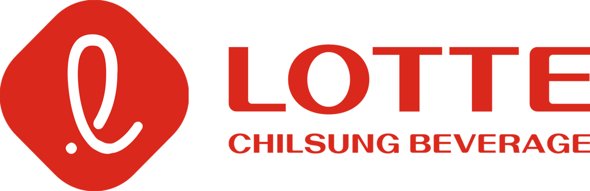

홈 > 브랜드 매거진 > 롯데칠성
롯데칠성 Lotte Chilsung Beverage
칠성사이다·펩시 유통으로 이어온 한국 대표 음료 제조기업
산업 분야 브랜드·비즈니스 · 공개 등급 자료 기반 · 브랜드 평가 4 ★

한눈에 보는 브랜드
1950년 동방청량음료합명회사라는 이름으로 설립되어 사이다 등 청량음료 제조업으로 출발했다. 이후 1967년 롯데그룹에 편입되면서 사명을 롯데칠성음료로 변경했다.
칠성사이다를 중심으로 국내 탄산음료 시장에서 오랜 기간 입지를 다져왔다.
브랜드 아이덴티티
창업 초기 브랜드(칠성사이다)를 그룹 편입 이후에도 사명과 제품명에 그대로 유지시킨 사례로, 대기업 인수·편입 이후에도 원 브랜드 자산을 보존하는 방식을 보여준다. 장수 브랜드의 유지와 함께 펩시코리아 유통 등 외부 브랜드 라이선스 사업을 병행하며 포트폴리오를 확장했다.
타임라인
BI/CI 변천사
대표 로고대표 브랜드 마크자주 묻는 질문
롯데칠성는 어느 나라 브랜드인가요?
롯데칠성는 한국의 브랜드·비즈니스 브랜드입니다.
롯데칠성의 브랜드 아이덴티티는 무엇인가요?
창업 초기 브랜드(칠성사이다)를 그룹 편입 이후에도 사명과 제품명에 그대로 유지시킨 사례로, 대기업 인수·편입 이후에도 원 브랜드 자산을 보존하는 방식을 보여준다.
함께 읽을 브랜드

식음료 · 자료 기반롯데칠성음료롯데칠성음료(Lotte Chilsung Beverage)는 칠성사이다로 유명한 한국의 대표 음료 기업으로, 롯데그룹 계열사다.
 브랜드·비즈니스 · 자료 기반행복나래
브랜드·비즈니스 · 자료 기반행복나래SK그룹이 만든 국내 최초 대기업 계열 사회적기업
 브랜드·비즈니스 · 편집 검수Fanta
브랜드·비즈니스 · 편집 검수Fanta환타는 코카콜라 컴퍼니가 보유한 과일향 탄산음료 브랜드로, 오렌지를 비롯한 다양한 과일 풍미를 밝고 경쾌한 색감으로 표현하는 것이 특징이다. 1940년 제2차 세계대...
YO
YO!
브랜드·비즈니스 · 편집 검수YO!YO!는 영국에 회전초밥을 대중화한 레스토랑 체인이다. 엔터테인먼트 업계 출신의 사이먼 우드로프가 1997년 런던 소호의 폴란드 스트리트에 첫 매장을 열며 출발했다....
AM
AMI AMI
브랜드·비즈니스 · 편집 검수AMI AMIAMI AMI는 2024년에 기록된 Designed by Wedge 계열의 브랜드 아이덴티티 사례입니다. Wedge가 아이덴티티 작업의 디자이너로 기록되어 있습니다....
 브랜드·비즈니스 · 편집 검수Bancomat
브랜드·비즈니스 · 편집 검수BancomatBancomat는 2025년에 기록된 Banking 계열의 브랜드 아이덴티티 사례입니다. Landor가 아이덴티티 작업의 디자이너로 기록되어 있습니다. 공개 섹션 정...
BO
BOC
브랜드·비즈니스 · 편집 검수BOCBOC는 1967년에 기록된 Designed by Wolff Olins 계열의 브랜드 아이덴티티 사례입니다. Wolff Olins가 아이덴티티 작업의 디자이너로 기록...
 브랜드·비즈니스 · 편집 검수Bose
브랜드·비즈니스 · 편집 검수BoseBose는 2024년에 기록된 Designed by Collins 계열의 브랜드 아이덴티티 사례입니다. Collins가 아이덴티티 작업의 디자이너로 기록되어 있습니다...